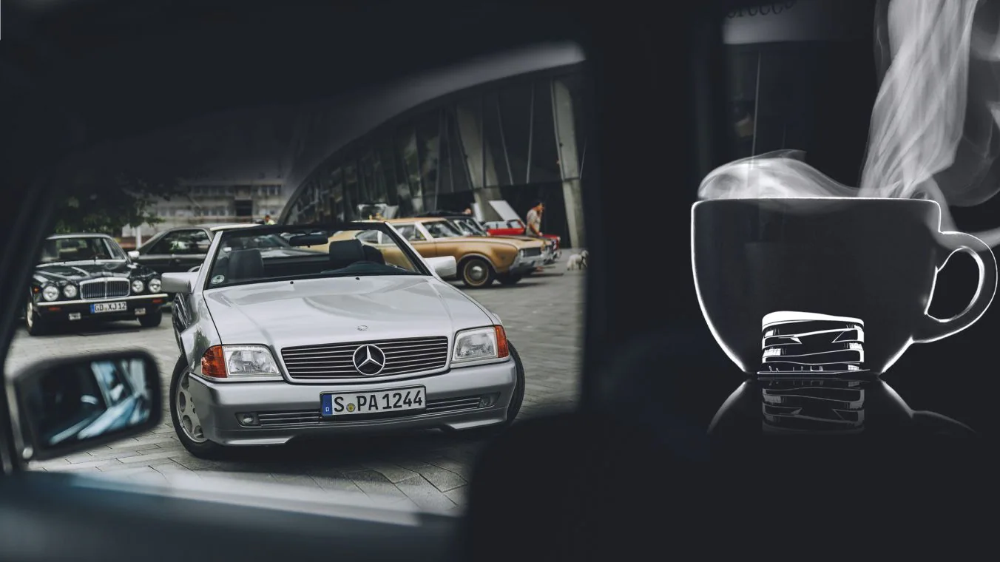

Established event for vehicle fans.
The popular classic car meetings “Classics & Coffee” at the Mercedes-Benz Museum will once again delight lovers of historic cars in 2022. The format is firmly established, as “Classics & Coffee” has been taking place for many years. Guests and vehicles come primarily from the surrounding region – but some visitors also travel from further afield, and even from abroad, to enjoy the unique flair on the extensive outdoor site.
Whether with or without the Mercedes star simply drive up in your classic car, whatever its age, meet like-minded people and chat about the vehicles: that is the recipe for success of this event. Pre-registration is not necessary.
Vehicles with H-plates and young classics more than 20 years old in a well-maintained condition may park free of charge on the museum hill.
Of course, visitors without classic cars who simply want to enjoy being part of the classic car scene and talk to the car owners are also very welcome.
-->